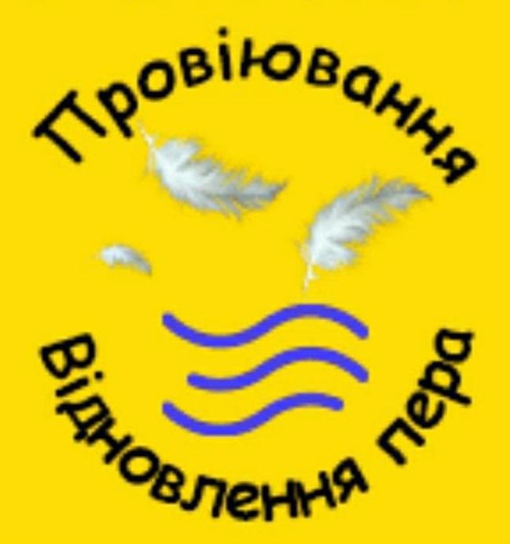
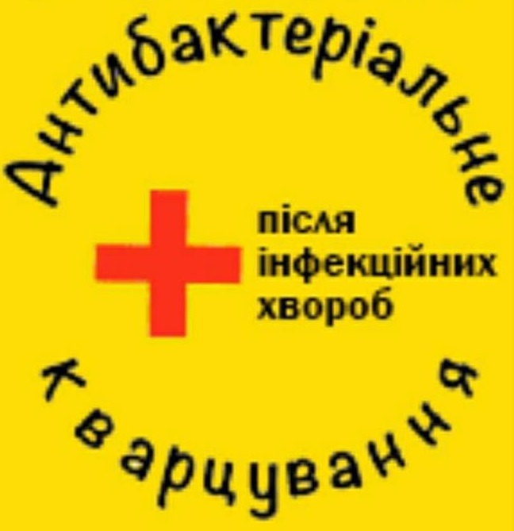
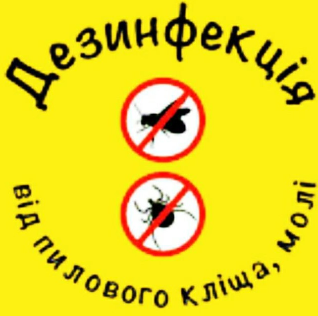

Чистка подушок, ковдр Луцьк – якісна чистка та відновлення з доставкою
Луцьк, вул. Стрілецька 59/3
Т. +38095060260
ТРИ РІВНІ ОЧИСТКИ

Етап 1: Провіювання пера

Етап 2: Антибактеріальне кварцування

Етап 3: Екологічна дезинфекція